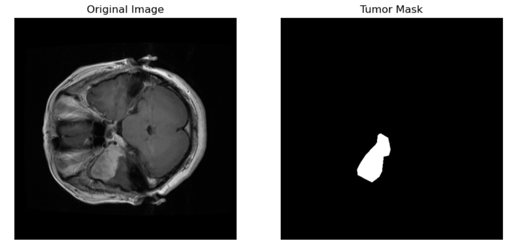
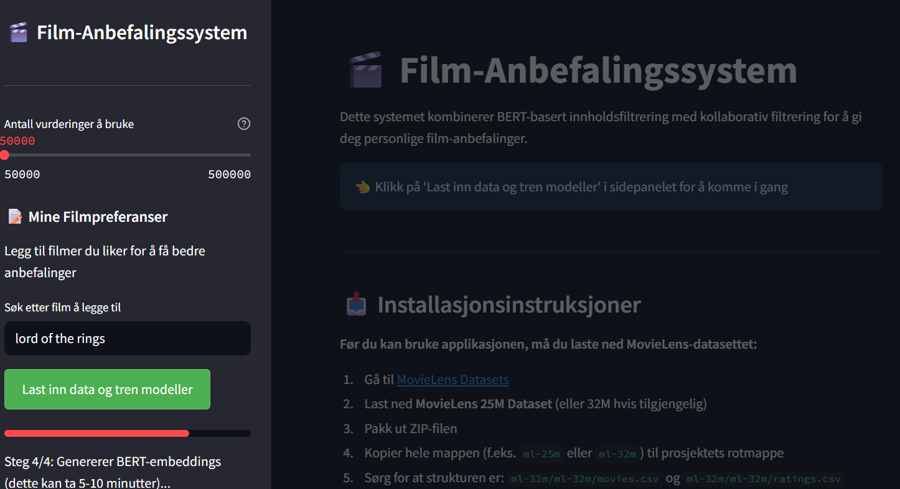
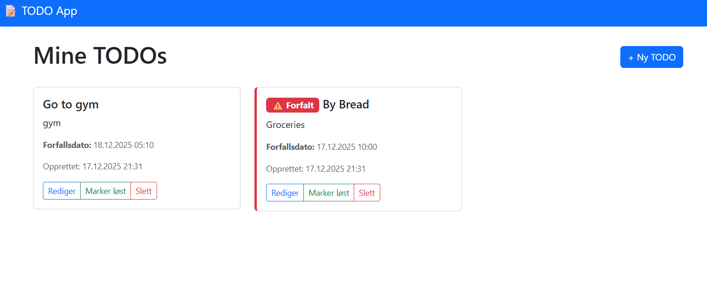
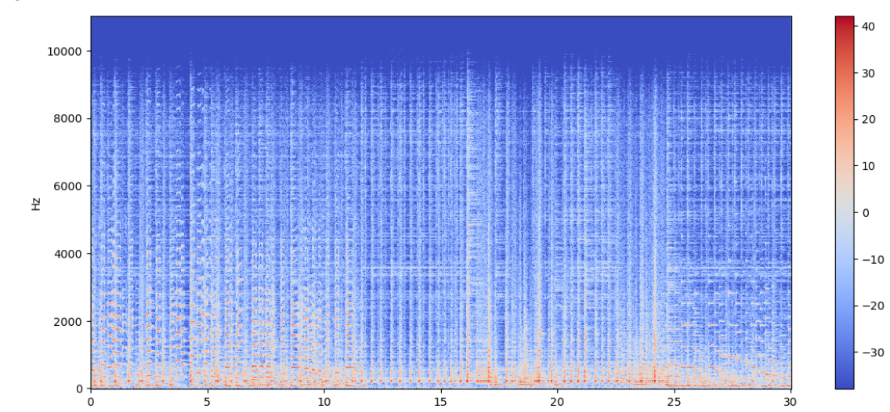
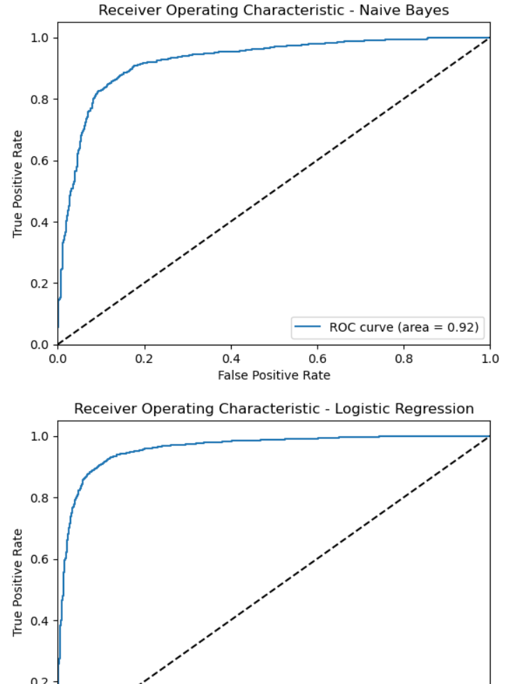
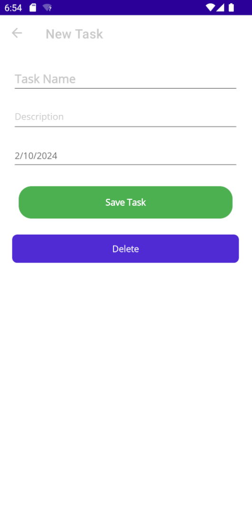
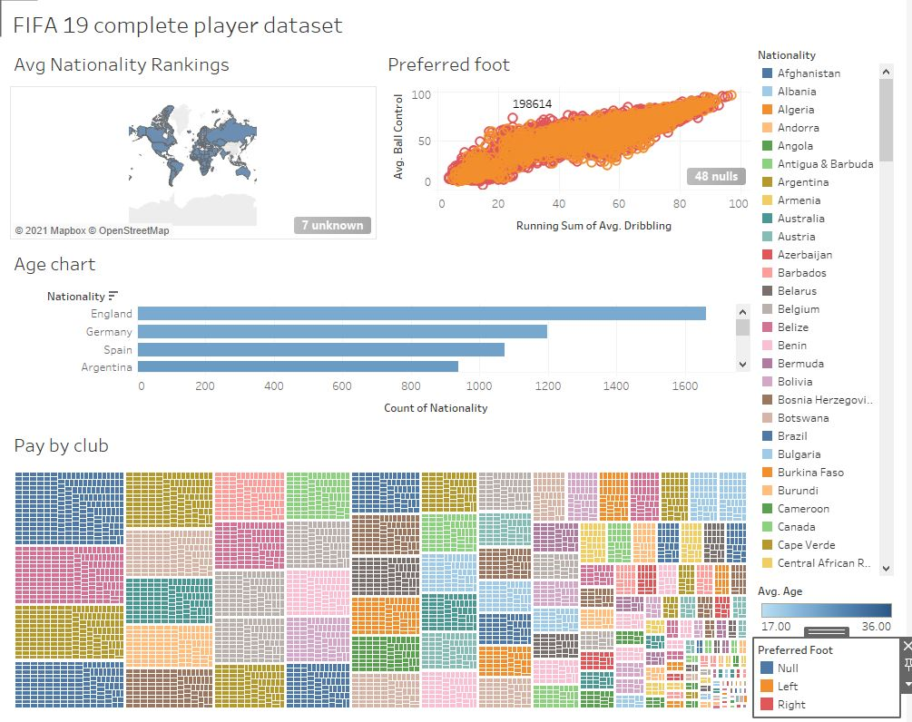
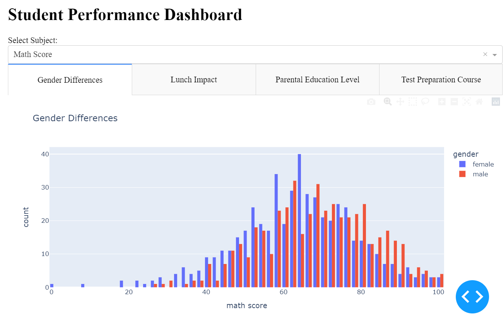

My Projects

NeuroNetClassifier - Deep Learning Image Classifier
A deep learning model for image classification using convolutional neural networks. Implemented with TensorFlow and Keras, achieving high accuracy on various datasets.

Film-anbefalingssystem
🎬 Intelligent film-anbefalingssystem som kombinerer BERT-basert innholdsfiltrering med kollaborativ filtrering (SVD) for å gi personlige film-anbefalinger. Bygget med Python, Streamlit, PyTorch og Transformers. Bruker MovieLens 32M datasett og TMDB API for filmplakater.

Todo App
En Django-basert TODO-applikasjon med full CRUD-funksjonalitet. Lar brukere opprette, redigere, slette og markere TODOs som løst. Inkluderer forfallsdatoer, visning av forfalte oppgaver, og moderne responsiv UI med Bootstrap. Komplett med tester og admin-interface.

Music Genre Classification using ML
A machine learning model that classifies music into genres based on audio features. Implemented using Python, scikit-learn, and librosa for audio processing.

SentimentNewsAnalyzer
This Project is aimed at analyzing sentiment in news articles and measuring the performance of the models used to get this insight.

.NET ToDo App
A feature-rich ToDo application developed using .NET Core and Entity Framework. Includes user authentication, task prioritization, and reminders.

DataTrendz
A dual-focus analytics tool merging football analytics and Amazon bestseller trends via Tableau and Power BI. It enhances decision-making in sports and publishing with interactive data visualizations.

Student Performance Insights Dashboard
An interactive dashboard that visualizes student performance data, helping educators identify trends and areas for improvement. Built using Python, Dash, and Plotly.